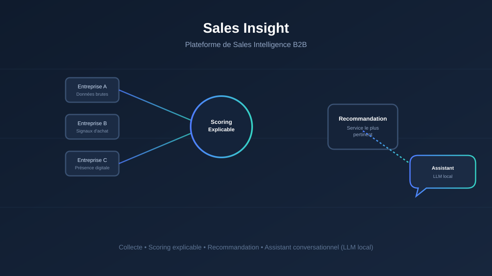

Sales Insight
Plateforme de Sales Intelligence B2B
Transformer des données d'entreprises en informations exploitables
pour la prospection commerciale, grâce à une architecture multi-agents.

Projet réalisé en entreprise
Pour des raisons de confidentialité, le code source et les données ne sont pas publics dans leur intégralité. Une courte vidéo de démonstration présente uniquement la landing page de l'application.
Voir le dépôt GitHubDémonstration
Aperçu de la landing page de Sales Insight :
Description du Projet
Sales Insight est une plateforme de Sales Intelligence B2B conçue pour transformer des données brutes sur des entreprises en informations directement exploitables pour la prospection commerciale. L'objectif : faire gagner un temps précieux aux équipes commerciales en automatisant la recherche, la qualification et la priorisation des prospects, tout en gardant une décision finale explicable plutôt qu'une boîte noire.
Fonctionnalités Principales
Collecte & Structuration
Collecte et structuration automatisées de données sur les entreprises à partir de différentes sources.
Signaux d'Achat
Analyse de la présence digitale et identification de signaux d'achat pertinents pour la prospection.
Qualification & Scoring
Système de qualification et de scoring des prospects selon plusieurs critères commerciaux.
Scoring Explicable
Scoring explicable permettant de comprendre précisément les facteurs ayant conduit à la qualification d'un prospect.
Recommandation
Système de recommandation identifiant le service le plus pertinent à proposer à chaque entreprise.
Assistant Conversationnel
Exploitation d'un LLM local permettant d'interroger les données en langage naturel via un copilote conversationnel.
Qualité des Données
Un travail particulier a été mené sur la qualité, la fiabilité et la cohérence des données tout au long du processus, de la collecte brute jusqu'à la transformation en insights exploitables pour la prise de décision commerciale.
Architecture Multi-Agents
La plateforme repose sur une architecture à 5 agents IA spécialisés, chacun responsable d'une étape du processus de qualification commerciale :
- 1. Prospection
Identification et collecte des entreprises cibles à partir de différentes sources de données.
- 2. Recherche
Analyse de la présence digitale de chaque entreprise et identification des signaux d'achat.
- 3. Détection d'intention
Évaluation du niveau d'intérêt et du moment opportun pour une prise de contact.
- 4. Scoring de leads
Qualification et notation des prospects selon des critères commerciaux pondérés, avec un scoring explicable.
- 5. Recommandation
Identification du service ou de l'offre la plus pertinente à proposer à chaque entreprise qualifiée.
L'ensemble est piloté par un copilote conversationnel basé sur un LLM local, permettant d'interroger la plateforme directement en langage naturel.
Technologies Utilisées
Backend & Données
- Python / FastAPI
- SQLModel
- PostgreSQL
Intelligence Artificielle
- PydanticAI
- Ollama (LLM local)
- Architecture multi-agents
Frontend & Déploiement
- React
- Docker
- Git / GitHub